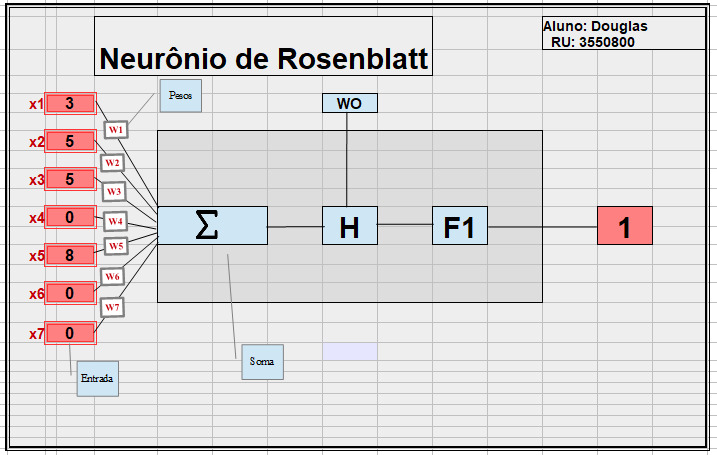

Projetos em Imagens

Análise de crimes utilizando Python com exploração de dados e visualização de resultados.

Machine Learning aplicado em projeto de Perceptron para classificação e detecção de padrões.

Sistema de cadastro de clientes desenvolvido em Python, com armazenamento e manipulação de dados.

Estruturação e estilização de tabelas utilizando HTML e CSS, com foco em layout e organização de informações.